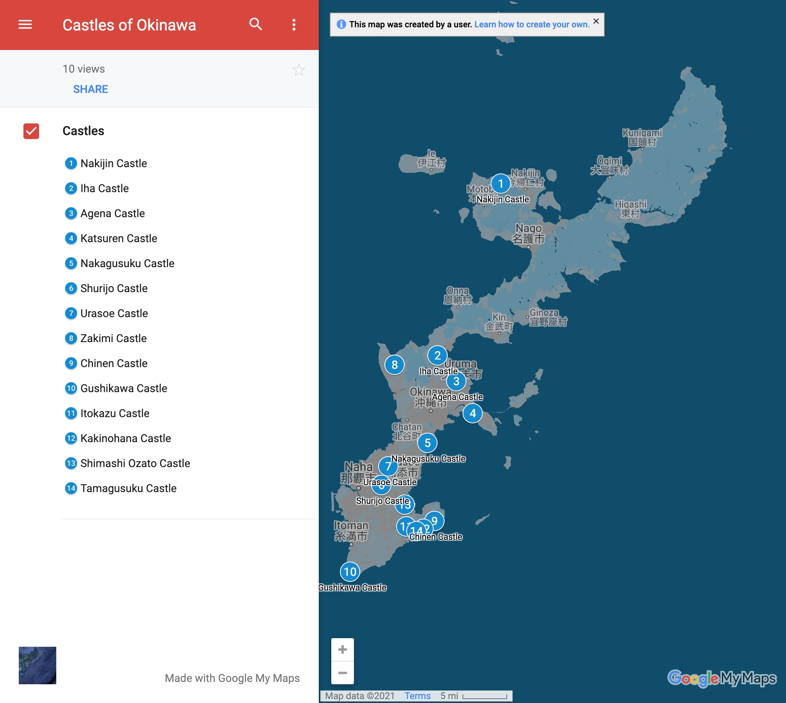
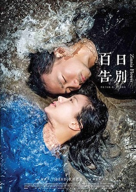
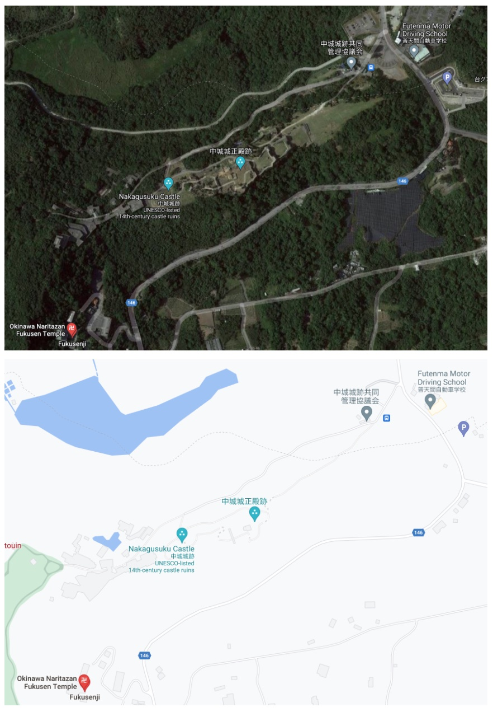
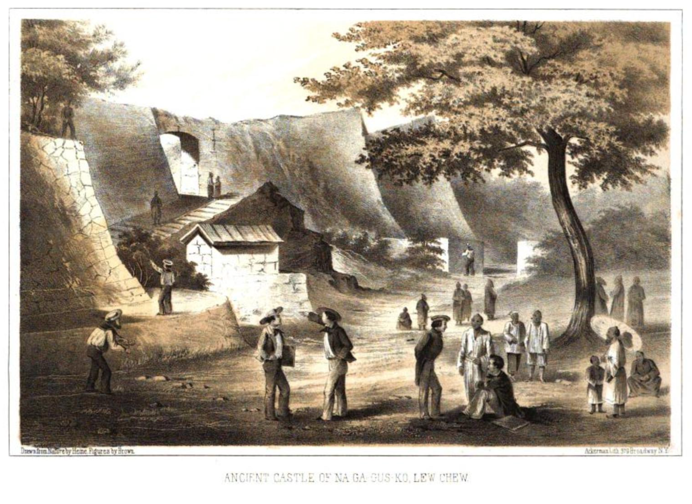
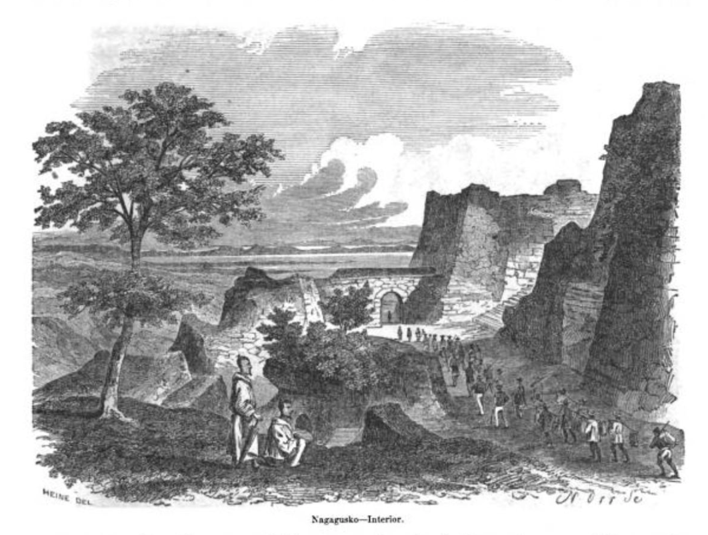
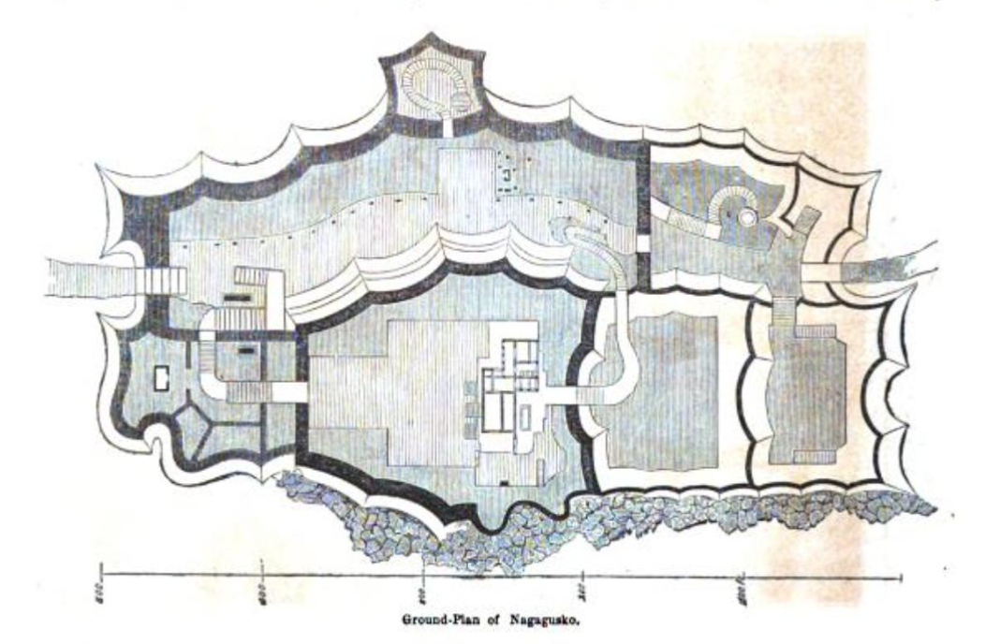
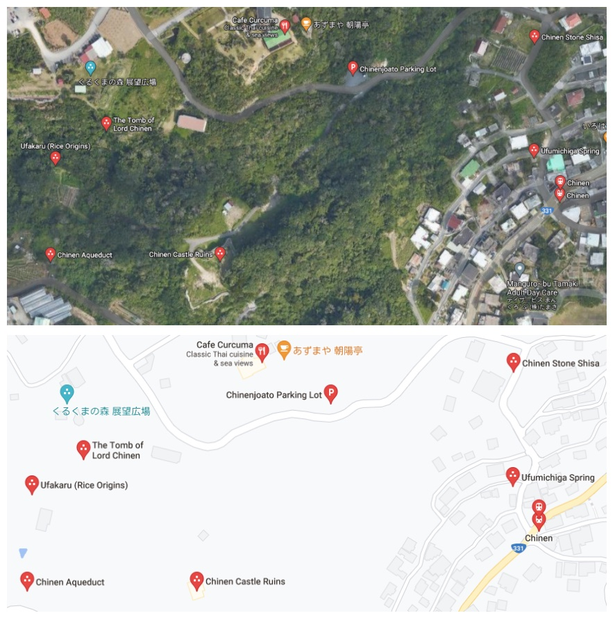

Travel Guide
Introduction
What's in the Guide?
- 14 Castles
- 3-star rating system
- Photos
- Points of Interest
- Getting There and Parking
- Where to Eat
- Side Trips
- Overview
- On the Trail
- Maps
Why Create a Guide?
I originally had the idea for this guide as a kind of augmentation to the Okinawa Island guides the US Marine Corps MWR (Moral Welfare and Recreation) usually handed out to servicemembers new to the island. As I dug into the content for this guide, I began to realize I had been to the castles, but hadn’t really seen them, I had missed many exciting and interesting details. So, this guide is an attempt to make up for that loss, and to both help and serve other island adventurers, hikers, history buffs, families with children, deployed service members, ESL teachers, and the just plain curious, to discover the amazing castles that have been patiently waiting for +500 years for you to discover on Okinawa.
How to Use this Guide
The guide is divided into the Introduction section, then a section for each region of the main Okinawa Island: Hokuzan (North), Chuzan (Central), Nanzan (South). Each castle has a full-page photo, a 1-page summary, a 3-star rating, and short paragraphs for “Points of Interest”, “Getting There and Parking”, “Where to Eat”, and “Side Trip”. After the 1-page summary is a multi-page “Overview” and “On the Trail” descriptions of what you can expect as you make your way through the castle gates and journey back into history. It’s my sincerest hope you’ll enjoy this guide and the best compliment you can give is to share and recommend this to your family and friends.
Regions
Okinawa Island is approx 100 km north to south, and on average 11 km east-west, and broken up into 3 historical regions during the Sanzan (3 mountain) period of 1314-1429. They were:
- Hokuzan in the north
- Chuzan in the central area
- Nanzan in the south

Photo by kallgan/CC BY-SA-3.0
The Maps
Maps and satellite views are provided to show both general location and points of interest in the area of the castle, and nearby.
The 14 castles covered by this guide are shown below.

Map data ©2021 Google
The online version of this map is available here:
Star Rating System
Each castle has been rated on a 3-star grading. You don’t want to miss great sites, but even the OK sites are often worth your while, as castles are often built atop ridges and hills with spectacular vistas. Okinawa is a breath-takingly beautiful island, and even a site with scattered ruins can often be a wonderful experience for young and old.
Castle Rating
| ⭐⭐⭐ | Great |
| ⭐⭐ | Good |
| ⭐ | OK |
Vocabulary
| Okinawa - 沖縄 | bay: wan - 湾 |
| Naha - 那覇 | beach: hama - 浜 |
| Nago - 名護 | river: kawa/gawa - 川 |
| city: shi - 市 | hill: oka - 丘 |
| north: kita/hoku - 北 | mountain: yama/san/zan - 山 |
| east: higashi - 東 | cave: do - 洞 |
| south: minami/nan - 南 | valley: tani - 谷 |
| west: nishi - 西 | waterfall: taki - 滝 |
| small: ko/cho - 小 | park: koen- 公園 |
| medium/center: chu/naka - 中 | garden: teien - 庭園 |
| large: dai/okii- 大 | castle: gusuku/shiro - 城 |
| point: saki/zaki - 崎 | ruins: ato - 跡 |
| sea: umi/kai - 海 | temple: ji - 寺 |
Introduction (part 2)
Okinawa Castles 101
Okinawa really is an island paradise, and it seems like everywhere you turn, you’ll stumble over an ancient castle wall or discover some new historical ruins. On the https://gusukumitisirube.jp website alone, they list 211 castle ruins, not including additional holy sites. I attempted to cover the best representative castles, and left out many sites that although may be historically significant, might not warrant a day trip.

Photo by Fg2/Public Domain
The Okinawan word for castle or fortification is gusuku. They are typically found on ridges and hilltops, although there are some exceptions. The height of the gusuku period was during the 12-15th centuries, and were constructed for the regional leaders called Aji (按司). Agriculture was believed to have begun in Okinawa between the 10-12th centuries. The only fully reconstructed gusuku is Shuri Castle in Naha. In this book, we cover the 5 castles that are designated as UNESCO World Heritage sites: Nakagusuku, Katsuren, Nakijin, Zakimi and Shuri Castle. Shuri was the only castle to be used by an Okinawan king, Sho Tai, in modern times. The building techniques used to create the gusuku were likely transmitted from Miyako Jima (宮古島) and Yaeyama (八重山) Islands to Okinawa. Many of the sites are nothing more than large archeological areas that have been designated as parks and/or historical sites. Some castles have original walls in various states of disrepair, and some have partially or fully reconstructed walls. Often you’ll notice different original construction styles at the same location that organically occurred after generations of use. The first three small kingdoms to rise at the beginning of the gusku period also known as the Sanzan (3 mountain) Period, were Nakijin Castle (今帰仁城) of the northern mountain (Hokkuzan), Urasoe Castle (浦添城跡) of the central mountain (Chuzan), and Nanzan Castle (南山城) from the southern mountain (Nanzan). All three paid tribute to the Chinese emperor during the Ming dynasty (1368-1644). Of the three, Urasoe was the most powerful at that time. Sho Hashi from Sashiki Castle (佐敷城), in the south eventually overthrew the Urasoe kingdom (Chuzan) in 1405 and unified the 3 kingdoms in 1429, creating the Ryukyu Kingdom. For a period of nearly 100 years, local Aji still struggled with civil war and political turmoil, and in 1523, all local Aji were moved to Shuri Castle bringing an era of stability and making Shuri the focal point of Okinawan culture, politics and economy.

Photo by Almighty Franklinstein/CC BY-SA-2.0
The castles that made the list for this guide were chosen to be easiest to find with Google Maps and Apple Maps. Many other Okinawan guidebooks mention castles in passing, but don’t give specifics which leads to frustration when attempting to locate the site. There are many, many more castle ruins than shown in this guide, be on the lookout on your travels, and you’ll be pleasantly surprised at finding small roadside signs that end up leading you to some offbeat castle ruins.
Every castle here is worth a day trip. Atop the castle walls, it’s not hard to imagine a guard or an Aji surveying his area of responsibility, it really makes the history of this magical place tangible. I hope you’ll catch the bug and make exploring gusuku part of your itinerary while travelling in Okinawa.
Visiting Castle Sites
Okinawa has first rate roads and highways, all the main sites have parking and signage, and some charge admission, it helps to always have some local currency, and often cold and hot beverages are available along the roadways at vending machines.

Photo by Boudewijn Huysmans/CC0 1.0
You’ll want to feel comfortable with Google/Apple maps before going and plan to stop for refreshments and/or lunch/dinner on the way back. There are plenty of convenience stores like FamilyMart, HotSpar, Lawson, 7/11 and fast food options abound like A&W, MOS Burger, KFC, McDonalds. Feel free to get out of your comfort zone, and try Okinawa soba, ramen, Japanese curry, or festival/comfort food when it’s available. (takoyaki, taiyaki, yakitori, okonomiyaki, etc.)
Okinawa Castles in the Movies
Movie #1: Karate Kid II

Photo by Fair Use
In the movie, “Karate Kid II”, Daniel and Kumiko visit the expansive coastal castle of Sho Hashi, the last king of Okinawa. Where is that castle? Is it still standing? Truth be told, the movie was filmed exclusively in Oahu, Hawaii, so no actual castles were used, but it does beg the question, was the movie’s castle inspired or modeled on a real one? Let’s find out.
Here’s a clip that shows the castle in Karate Kid II:
Karate Kid II - The Castle
The historical king Sho Hashi mentioned in the movie, has 5 castles closely associated with his rule, so we’ll touch on those, but there’s a 6th castle that I think could have been the inspiration for the movie.
Castle Candidates for Karate Kid II
- Sashiki Castle
- Urasoe Castle
- Nakijin Castle
- Nanzan Castle
- Shuri Castle
- Gushikawa Castle <-- ( ** spoiler alert ** )
Sho Hashi began as the Aji (local leader) of Sashiki Maguri (district) in the Chuzan (central Kingdom) during the Sanzan (3-kingdom) period. Initially, Sho Hashi would have called Sashiki Castle his ancestral home. There is a shrine now at Sashiki Castle, but not even the castle walls remain at this site.

Photo by Sturmgewehr88/CC BY-SA 4.0
Sho Hashi began his expansion from Sashiki castle to overthrow the central kingdom of Chuzan, which was headquartered at Urasoe Castle. At that time, this was the largest castle on Okinawa, and today is an easy visit just north of Naha.

Photo by あばさー/PD
Next, Sho Hashi spread his reign north with the capture of the Hokuzan (northern) kingdom and the surrender of Nakijin Castle. This is the only remaining castle in the Hokuzan (north) region, and is a great spot to enjoy the cherry blossoms in January and February, and is a peaceful spot to visit with great views of the ocean. It's now a UNESCO World Heritage site.(UNESCO 972-003)

Photo by FoxyStranger Kawasaki CC BY-SA-3.0
Finally, Sho Hashi's take over of the southern (Nanzan) kingdom Nanzan Castle brought the 3rd and final region under his reign. Today’s there’s only a shrine and an elementary school that stand on the spot of the mighty southern castle.

Photo by Kugel PD-Self
By uniting the 3 regions of: Hokuzan, Chuzan, Nanzan, Sho Hashi created the Ryukyu Kingdom, thus ending the Sanzan (3-kingdom) period. Sho Hashi set up residence at Shuri Castle, which is the best maintained castle today, and is also a UNESCO World Heritage site.(UNESCO 972-007)

Photo by Savannah Rivka CC BY-SA 4.0 INT
And finally, the last castle in our list is Gushikawa Castle. This is my best guess at a location that matches what they were trying to come up with in Karate Kid II. An ancient castle, built along the water with a fantastic backdrop. Although not linked to Sho Hashi’s rule like the previous castles, and not as mighty as any of them, Gushikawa Castle it is the only existing coastal castle I’ve found that still has walls, and you can visit.

Photo by Captain76/Public Domain
It’s located on the very southern tip of Okinawa near Cape Kyan and the Kyan lighthouse. The two things that make this castle so unique are it’s location, and a secret sea cave. It’s built on a rocky outcrop which affords it views of the ocean on three sides, and it’s rubble style walls drop down to the sea cliffs, making this castle quite a photo op, there’s a blowhole inside the first bailey which drops down to a secret sea cave below. The story with the cave is that it could have been used to bring up supplies or perhaps for a quick getaway. As an added bonus, Gushikawa Castle is about 100m west of a popular cliff diving and swimming hole. Definately worth your time to check out.

Photo by Captain76/Public Domain
Movie #2: Chasuke's Journey

Photo by Fair Use
In this 2015 Japanese movie, “Chasuke's Journey”, the protagonist, Chasuke, is heaven's tea server, and Nakagusuku Castle becomes the backdrop for heaven. Here's the trailer showing the distinctive outerwall (warning, if you blink, you'll miss it):
Chasuke's Journey
Movie #3: Zinnia Flower
Photo by Fair Use
In this 2015 Taiwanese movie, “Zinnia Flower”, one of the 2 main characters, Ming visits Shuri Castle. Here's a trailer that shows Ming approaching the gates of the castle:
Zinnia Flower - Shuri Gate
And in this scene from the same trailer, you see the wall of the castle:
Zinnia Flower - Shuri Wall
Central - Chuzan
Included in this section
- Agena Castle
- Iha Castle
- Katsuren Castle (UNESCO 972-005)
- Nakagusuku Castle (UNESCO 972-006)
- Shuri Castle (UNESCO 972-007)
- Urasoe Castle
- Zakimi Castle (UNESCO 972-004)
Nakagusuku Castle (中城城跡)
⭐⭐⭐ Great
Photo by 663highland/CC BY 2.5
Points of Interest
- Nakagusuku Castle is a UNESCO World Heritage Site (972-006)
- Forge Site
- Walls built in all 3 major styles (nozura, nunozura, aikatazura)
- Multiple wells
- Warrior walkways on the walls
Getting There and Parking
- By car: Navigate to Nakagusuku Castle (中城城跡), 503 Ogusuku, Kitanakagusuku, Nakagami District, Okinawa 901-2314, Japan. This will take you east of Ginowan City and MCAS Futenma, and is sandwiched between the Ocean Castle Country Club, and the Onishi Terrace Golf Club.
- By Bus: From the Aeon Mall Okinawa Rycom, take the GM (Gusuku Megurin) bus and get off at Nakagusuku Gusukuato stop. Main & South Bus Route Map
- There’s parking for +30 cars and multiple spots for tour busses.
- There is a public wheel-chair accessible restroom just inside the entrance on the right.
- Admission is 400¥ for adults and 300/200¥ students and children. Hours: 8:30am-5pm. https://www.nakagusuku-jo.jp/
Where to Eat
Gabusoka Soba (我部祖河食堂 中城店), 2018-1 Kuba, Nakagusuku, Nakagami District, Okinawa 901-2401, Japan. Hours: 11am-8:30pm. http://www.gabusokasoba.com
Side Trip
Okinawa Naritazan Fukusen Temple 沖縄成田山福泉寺. 617 Ishado, Nakagusuku, Nakagami District, Okinawa 901-2403, Japan. https://okinawa-naritasan.jp
Maps - Nakagusuku Castle
Map data ©2021 Google
Overview - Nakagusuku Castle
The 215m x 80m castle overlooks Nakagusuku Bay and the Philippine Sea to the east. The south east side of the castle is a natural cliff. The castle is fairly linear running from the south east at a diagonal to the north west at an elevation of 100m. There are 6 areas (baileys) enclosed by stone walls still in this castle. The four baileys along the south side are linear, and the other two are along the north side. The majority of the castle is made from cut limestone. The top corners of the walls you will notice have rounded peaks that add to the aesthetic appeal of this castle. The back gate is a beautiful stone arch. The front gate at the top of the stairs is thought to have been built in a tower style. There are 8 sacred places of worship inside the castle, primarily on the west end. There was an iron works onsite and it was believed to be for the production of weapons.
Lithograph by Heine & Brown/Public Domain
Construction occurred from the 13-15th centuries in 2 main stages. Gosamaru was the architect of the castle and took inspiration from Nakijin Castle. The walls are built in three styles. Nozura (rubble) style, the main enclosure (bailey 1) and bailey 2 are made with the nunozumi/tofuzumi (masonry) style, similar to rectangular brickwork. The 3rd bailey on the north east end is the first wall you see from the parking lot and it is by far the thickest and it’s built in the aikata (turtleback) style, you’ll see the stones each have a unique shape, and fit together very tightly, this make for an extremely strong and stable wall. Wilhelm Heine, drew the castle during Admiral Mathew C. Perry’s 1853 expedition to Okinawa, as “Ancient Castle of Na-Ga-Cus-Ko, Lew Chew”, seen above.
On The Trail - Nakagusuku Castle
Make your way from the ample parking lot to the kiosk on the right of the path to pay. Continue down the asphalt path along the entire side of the castle, if you’re lucky, catch a ride on the golf cart that ferries guests to the front gate. You’ll see a black stone UNESCO World Heritage monument.
Lithograph by Heine & Brown/Public Domain
Climb the stairs, and a large grassy field opens up to you, and you’ll see a signpost guiding you to the Forge Site. As you turn toward the castle, it towers overhead, and the Forge Site is at the base of the cliff slightly to the right of center.
As you face the cliffs, head to your left along the cliffs, and follow the stone path as it heads slightly uphill to the main gate. Notice how tall the walls are here as you approach. If you have the tourist map with you, this section is really small on the map, even though it’s an imposing entrance. The walls here are nunozumi, and are rectangular in shape. Ahead on your right, you’ll see the white marker for Nakagusuku Castle Ruins.

Photo by 663highland/CC BY-A-2.5
As you enter through the main gate area, it almost feels like a tunnel made from massive stones. As you pass through the gate, you’ll see the stone walls on your right for the ramp are made in the aikata (turtleback) style, where the rocks are fitted together. You are now inside the Western bailey. This section is about 120m long and was used in the drilling of soldiers and horse riding.
Make your way up the wooden, and then stone steps to enter the gate into the Southern bailey. You’ll see a number of signposts explaining the features, including a number of sacred places of prayer that are still used.
- Sacred Place of Prayer: Utuukura Hinukan (Fire Deity) - Common Name: Shuri Utuushi (Worship Area)
- Sacred Place of Prayer: Kugusuku no Oibe - Common Name: Kudaka Utuushi (Worship Area)
- Sacred Place of Prayer: Amagoi no Utaki
If you look around the walls you may notice square hole cutouts, which were used for early non-western firearms (火矢). There’s a great view out to the ocean from this bailey as well. Head up the stairs and through the arched stone gate. You are now inside the 1st bailey, which was home to the Main Hall.
Lithograph by Heine & Brown/Public Domain
Turn to your right and head up the stairs to check out the great views of Nakagusuku Bay from the top of the wall. You’ll see signs for:
- Main Hall Site
- Sacred Place of Prayer: Nakamori no Oibe - Common Name: Chigee Utaki
Make your way through the next arched stone gate into the 2nd bailey. As you transition from space to space you are reminded how much square footage this castle has. You’ll see a sign for:
- Sacred Place of Prayer: Shiraitomi no Oibe
Make your way to the top of the wall, and walk along the warrior paths, where the sentinels would keep watch. While you’re here take note of the sinuous lines that the walls have.
Follow the sign for “Route” down the wooden staircase and into the end of the West bailey. You’ll see another “Route” sign at a gate that is shored up with wooden beams. On the other side of the gate, you’ll see a sign for the Ufugaa Well.
Head down the stairs and into well area and notice all the green moss and ferns, this is a great place to cool off. When ready, head out of the well, and along the path. You’ll see a sign for the Third Enclosure - also known as the Miigusuku - or new castle.
Head up the stairs. Notice the walls in the 3rd bailey (enclosure) are in the aikata (turtleback) style, where the stones are shaped to fit together organically. Pass through the massive arched stone back gate, and notice it’s built of giant stone masonry, in the nuno style. This opens out into a large grassy area with a static model of the castle and hill top, it’ll give you an opportunity to review what you’ve just seen and notice if you missed anything.
South - Nanzan
Included in this section
- Chinen Castle
- Gushikawa Castle (Itoman)
- Itokazu Castle
- Kakinohana Castle
- Shimashi Ozato Castle
- Tamagusuku Castle
Chinen Castle (知念城跡)
⭐⭐ Good

Map data ©2021 Google
Points of Interest
- Chinen Castle Ruins
- Tomb of Lord Chinen
- Chinen Spring
- Ufakaru (origin of Okinawa rice cultivation)
Getting There and Parking
- By car Navigate to the Chinenjoato Parking Lot (知念城跡駐車場) which is just off Hwy 331 in Chinen, Nanjo City.
- By bus, take #38 from Naha to Nanjo City, Chinen stop on Hwy 331: Main & South Bus Route Map
Where to Eat
- Cafe Curcuma (カフェくるくま) is just up the road from the parking lot and has great views. You’ll also find them on Yelp. Hours: 11am-6pm M-F and 11am-7pm Sat, Sun and Holidays. http://curcuma.cafe/menu.html
- There are a couple food options as well as souvenirs in the Minamishiroichi Sight Seeing Information Center.
Side Trip
Sefa-Utaki: is the holiest site in Okinawa, and less than 3km away, it’s fabled to be the location where the god Amamikyu landed on Okinawa who later built Chinen and Tamagusuku castles. Purchase tickets from the Minamishiroichi Sight Seeing Information Center (南城市観光協会), and then walk the 400m to Sefa-Utaki.
Maps - Chinen Castle
Map data ©2021 Google
Overview - Chinen Castle
Chinen Castle is located on the south-east side of Okinwas South-East of Naha in Nanjo City (南城市). The castle is about 75m x 50m in area and at an altitude of 80m. This site is peaceful and usually tourist free and has the feel of a nature walk.
When visiting Chinen Castle Ruins, you’ll notice the original walls are darker, the rocks are smaller and less regular. In contrast, the newer and/or reconstructed walls are made from limestone masonry, and are smoother and fit together well. The walls are about 3m high, and the gates still have stone arches, now shored up with timbers. The eastern side is the old castle, and the western side is the new castle. The newer section was built by King Sho Shin (尚真) who reigned 1477-1526, and later would unify the three kingdoms by confiscating all weapons and moving all Aji and their families to the Shuri Castle area.
The area around Chinen Castle Ruins also hold the Tomb of Lord Chinen (知念按司の墓), Chinen Spring (aka Chinen Aqueduct 知念大川), and the Ufakaru (ウファカル) which is believed to be the original location of rice cultivation in Okinawa.
Chinen castle was one of the holy sites on the Agariumai pilgrimage, which was historically taken by Okinawan royalty from Shuri Castle east to Chinen in the 1300’s. In 1970 it was designated a National Historic Site.
On The Trail - Chinen Castle
Park at the Chinenjoato Parking Lot, it’s marked by a bilingual “Chinen Castle Site”, parking sign with the international blue and white “P”. The elevation of the parking area is about 110m, which is slightly above Chinen Castle, which stands at about 80m.
Across the road by the guard rail, you’ll see the “Chinen Castle Ruins” sign with a brown arrow pointing down and to the right, indicating the trailhead. At the trailhead two informational boards stand; the left hand all-Japanese info board is summarized here:
“Chinen Gusuku Historical Site The site consists of two castles; Mii-gusuku (newer), and Kou-gusuku (older). The site underwent some construction during a period 1761-1903, and is a historical site for religious/cultural pilgrimage.”The right hand info board, has English translations and explains the history and significance of the area;
Chinen Gusuku Guide Map
This is a settlement at the foot of Chinen Gusuku, and it was an area governed by the high priestess Kikoe Ogimi during the Ryukyu Kingdom period. Together with Tamagusuku it is said that the area was also the point of origin in rice cultivation. This is an area where there are many shrines and wells, and it can be said that this is a place where the spirit of ancient times, when people had their daily life closely connected with the cultural assets, still prevails in this area.
The Otsunahiki Tug of War in Chinen takes place every five years. It was discontinued in 1958, but it was revived in 2003.
The right hand board lists 7 points of interest in the area, of which, only 1,2,5 & 6, shown highlighted below are at the Chinen Castle site:
- Chinenjoato Castle site
- Chinen Ajinohaka Tomb
- Miya Place of Worship
- Ufuya Place of Worship
- Chinen Ukka Spring
- Ufakaru Legendary Ricefield
- Kamiyamanoton Sacred Place
The asphalt path runs gently downhill about 150m from the trailhead to the castle, and is bordered by jungle growth that almost meets overhead and affords some welcome shade with the sounds of the local birds.
Within sight of the castle, on the right hand side is a white marker with Japanese for “Noro Mansion Ruins” (ノロ屋敷跡), this was the home of the priestess or “Noro”. The trail is a small loop that enters and comes out ahead on the path about 6m (20’) down the road between a low stone wall that has tree roots growing from it. As you approach Chinen Castle, there is a stone monument on the left with the name in Japanese (知念城跡). A stone ramp with a few low steps rises up to the main gate, which is shored up with wood beams holding up the stone arch. There are actually two gates on this north side, the main gate here and a second further down the road. Enter the main gate, and you’ll get a sense of how thick the walls are. You have entered the “new” castle area. If you were to follow the wall to the left (east), you’d enter the tree covered area that was the old castle. After you pass through the main gate, the 2nd gate is up along the wall to your right and next to the hinukan, which is the location of the house fire spirit. Check out the 2nd arched stone gate, then take the path that leads to the top of this main wall. When you’re ready make your way back down, and walk across the flat grassy area inside the castle to the far wall, which is lower and take in the views out to the ocean. Make your way back to the road and as you continue down it, you’ll see a trio of brown signs for:
- Ufakaru (rice origins)
- The Tomb of Lord Chinen
- Chinen Ukka (spring)
Continue past the signs and you’ll see a path off to your right with some low stone steps, up to the Ufakaru, the traditional location of the first rice cultivation in Okinawa. Make your way back down and continue along the road, the pavement will end, and become a green tunnel of jungle that heads downhill, and eventually opens up to the Chinen Ukka (spring) area, that has ancient stone floor sand walls, and just past this you’ll see a white information marker, for the spring;
Chinen Ukka
The Chinen Ukkaa's source is a spring called the "Ufakaru", and lies under the cliff behind it. In the "Chuzan Seikan" (History of Ryukyu)(1650), it is written that "Amamikiyo (the creator of the Ryukus) planted rice in the rice paddies behind the Chinen Ukkaa and the Ukinji Hainju site (Two natural springs, once called "received water", the other called "running water") in Tamagusuku". From this, the Chinen Ukkaa became a holy site where the Ryukyu King came personally to worship, and is now part of the present Agari Umaai.
And underneath this description, a 2nd description is of the Agari Umaai pilgrimage;
The origins of the Agari Umaai
The "Agari Umaai" is a pilgrimage to sacred sites in Chinen and Tamagusuku, wehre it is said that the Amamikiyo Zoku (people of the goddess Amamikiyo), the ancestors of the people of Okinawa, settled. Since the areas of Ozato, Sashiki, Chinen and Tamagusuku, with Shurijo Castle as their center were collectively called the "Agarikata", this pilgrimage to the sacred sites in Chinen and Tamagusuku was thus called the "Agari Umaai". The Ryukyuan king personally made pilgrimages to Kudaka Island, which was believed to be where wheat and rice cultivation originated.
From here you can take the trail that heads uphill to the Tomb of Chinen, which is a small stone shrine. From here you can work your way back downhill which may be harder than going up, make your way back to the spring, then to the castle, and finally to the parking lot. Now it’s time for refreshments and maybe a side trip.